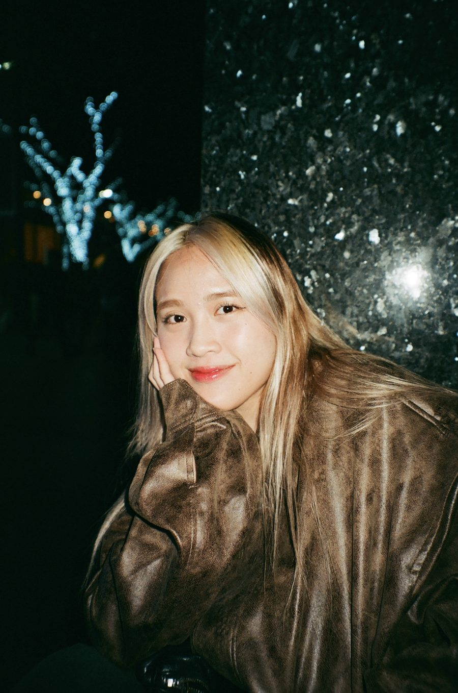

About
I'm a designer from Taipei, now based in New York. I studied graphic design at University of the Arts London, where I learned to think through form, structure, and visual language.
Over time, my curiosity shifted beyond how things look to how they work: how people navigate systems, make sense of interfaces, and experience design in motion. I'm now pursuing an MFA in Interaction Design at the School of Visual Arts.

Why design
I design because I enjoy asking why.
Why something feels confusing, why certain interactions exclude people, and how design can quietly guide users toward better experiences. Design gives me the tools to explore these questions through research, experimentation, and iteration.
Across my work, I'm drawn to projects that explore clarity, accessibility, and the emotional side of human-computer interaction.
Methodology
Creative process
- 01Ask whyDesk research and interviews, to find what people need and not only what they ask for.
- 02Find the clear insightGroup what I heard, name the real problem, then design decisively around it.
- 03Decide what not to buildI treat scope as a design decision, not a constraint.
- 04Prototype, test, subtractUsability comes from subtraction. I validate quickly and refine through iteration.
Practice
Experience
- [Dates][Internship role], [Company][One line on what you did.]
- Sep 2025 to nowFraming UX and UX/UI Essentials CA, SVA IxDResearch synthesis, critique sessions and supporting student teams.
- Summer 2022Research intern, Taiwan Design Research InstituteInternational development research and design award support.
- 2025 to 2027MFA Interaction DesignSchool of Visual Arts, New York
- 2022 to 2025BA Graphic DesignUniversity of the Arts London